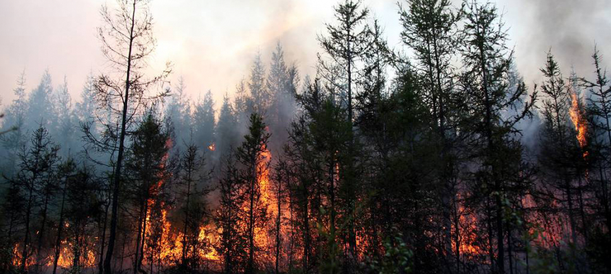
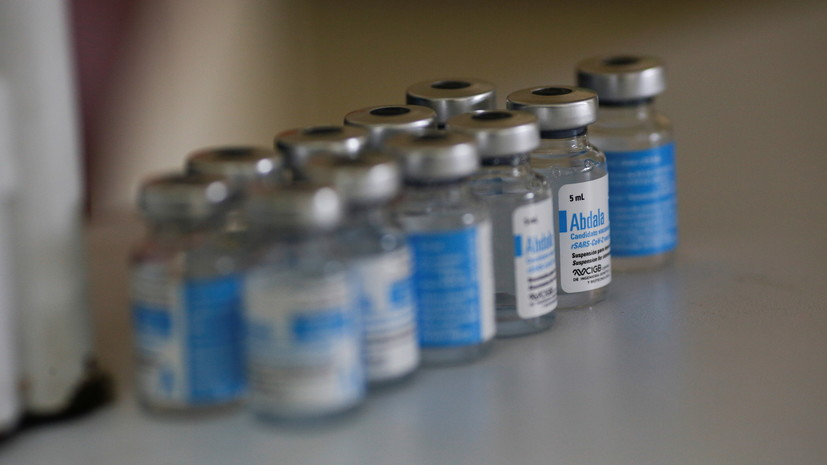

Домашнее задагние №2
Чемпионат Европы по футболу UEFA EURO 2020
Читать далее
16-й розыгрыш чемпионата Европы по футболу, футбольного турнира, проводимого каждые четыре года среди национальных сборных, входящих в состав УЕФА. Должен был пройти с 12 июня по 12 июля 2020 года, но из-за пандемии COVID-19 состоялся на год позже, с 11 июня по 11 июля 2021 года. При этом, как и летние Олимпийские игры в Токио, турнир сохранил изначальное название с указанием 2020 года. Это первый чемпионат Европы по футболу, который был перенесён в связи с чрезвычайными обстоятельствами.
23 апреля 2021 года УЕФА принял решение о том, что зрители будут допущены на матчи турнира, однако на большинстве матчей, включая полуфиналы и финал, заполняемость трибун должна была составлять не более 50 %.
Запах гари в Петрозаводске вызван лесным пожаром в Пряжинском районе
Читать далее
В МЧС рассказали, что в настоящее время в Пряжинском районе продолжает гореть лес, дым оттуда движется к столице Карелии.
В Пряжинском районе пожарные ведут борьбу с возгоранием леса.
Как сообщили «Столице на Онего» в МЧС, дым из Пряжинского района движется в сторону Петрозаводска, поэтому в карельской столице ощущается запах гари.
Согласно официальным данным, сегодня на территории Карелии обнаружено 33 лесных пожара. Их общая площадь — 2182 гектара.
В Суоярвском районе Карелии введен режим чрезвычайной ситуации в связи с природными пожарами.
Кубинская вакцина Abdala показала 100%-ную эффективность против тяжёлых форм COVID-19
Читать далее
Кубинская вакцина от коронавируса Abdala, разработанная кубинским Центром генной инженерии и биотехнологии (CIGB), показала эффективность в 100% в ходе третьей фазы испытаний.
Кубинская вакцина Abdala показала 100%-ную эффективность против тяжёлых форм COVID-19
Reuters
Как пишет Cuba Debate со ссылкой на директора CIGB Марту Аяла Авила, препарат показал 100%-ную эффективность в предотвращении тяжёлых случаев заболевания и летального исхода и 92,28%-ную эффективность в предотвращении симптомов заболевания.
В испытаниях участвовали более 1 млн человек.
9 июля власти Кубы выдали разрешение на экстренное применение разработанной местными специалистами вакцины от коронавируса Abdala.
Вакцина вводится тремя дозами.